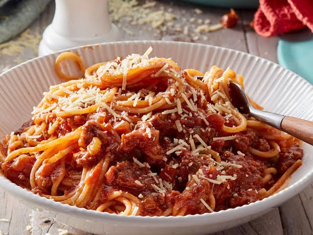

Spaghetti Bolognese

Descriptions
A rich, slow-simmered Italian classic — ground beef in a deep tomato sauce, tossed with spaghetti and finished with parmesan.
Ingredients:
- 2 tablespoons olive oil
- 1 medium onion, finely diced
- 2 carrots, finely diced
- 2 celery stalks, finely diced
- 3 garlic cloves, minced
- 500 grams ground beef
- 100 grams pancetta or bacon, diced
- 120 milliliters red wine
- 700 grams canned crushed tomatoes
- 2 tablespoons tomato paste
- 250 milliliters beef stock
- 1 bay leaf
- 1 teaspoons dried oregano
- 0.5 teaspoons salt, plus more to taste
- 0.3 teaspoons black pepper
- 60 milliliters milk or cream
- 400 grams spaghetti
- 50 grams parmesan cheese, grated, plus more to serve
- 1 fresh basil leaves, torn, to garnish